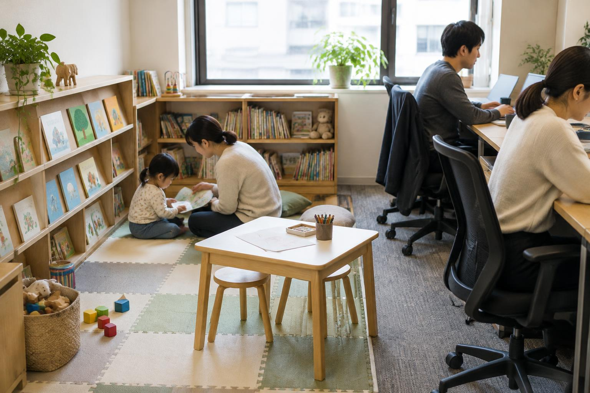

育児支援金 月2万円〜
扶養の有無を問わず、子育て中の従業員に支給しています（適用条件あり）。
SUPPORT
子どもの発熱も、参観日も。“仕方ない”を前提に、仕事を組み立てます。
扶養の有無を問わず、子育て中の従業員に支給しています（適用条件あり）。
業務委託のフリーアニメーターの方も、支援の対象になります。
首都圏に住んでいなくても大丈夫。自宅からお仕事ができます。
子どもの病気や学校行事に合わせて、作業時間を調整できます。


スタッフの1日の一例です。作業時間は一人ひとりの暮らしに合わせて決めています。
起床・朝食
子どもを送り出す
作業データで届いたカットを進める
昼休み
作業チェックバックの修正など
お迎え・家族の時間
子どもの就寝後に1時間ほど作業

育児支援金は、子どもの保育料に充てています。家で作業ができるので、急な発熱のときも慌てずにすむようになりました。
在宅アニメーター（スタッフインタビューより）
CONTACT
経験者の方は採用へ、未経験の方は育成プロジェクトへ。どちらもお気軽にご相談ください。